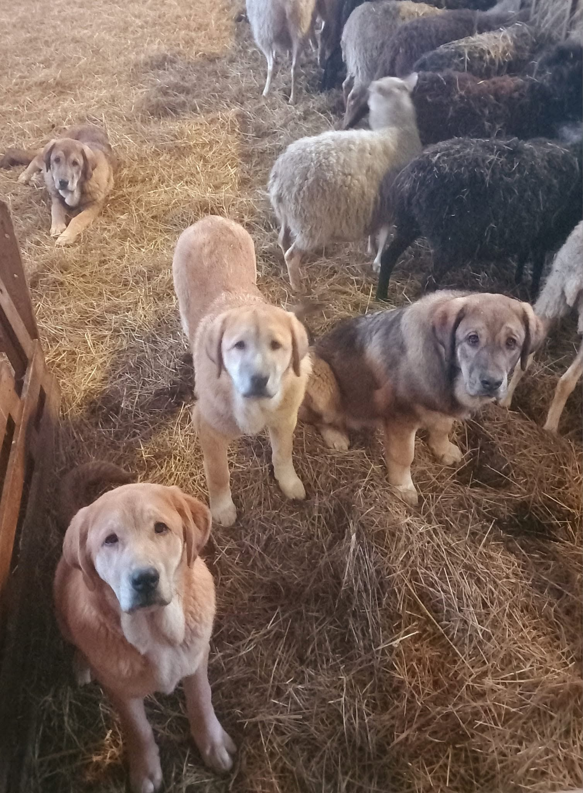
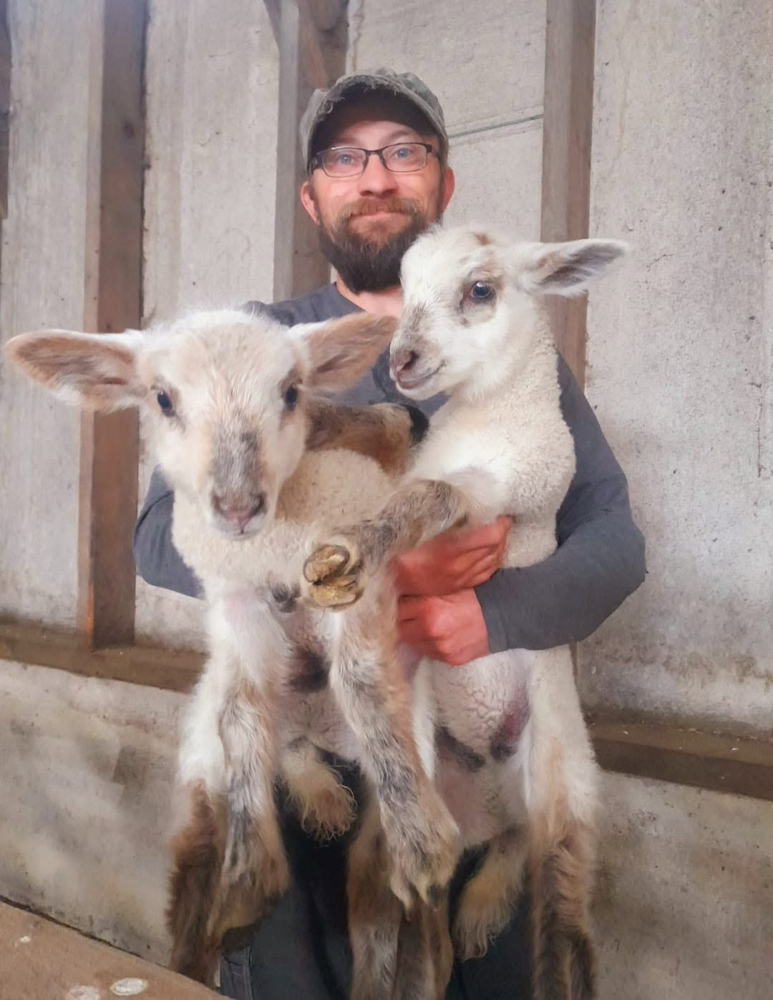
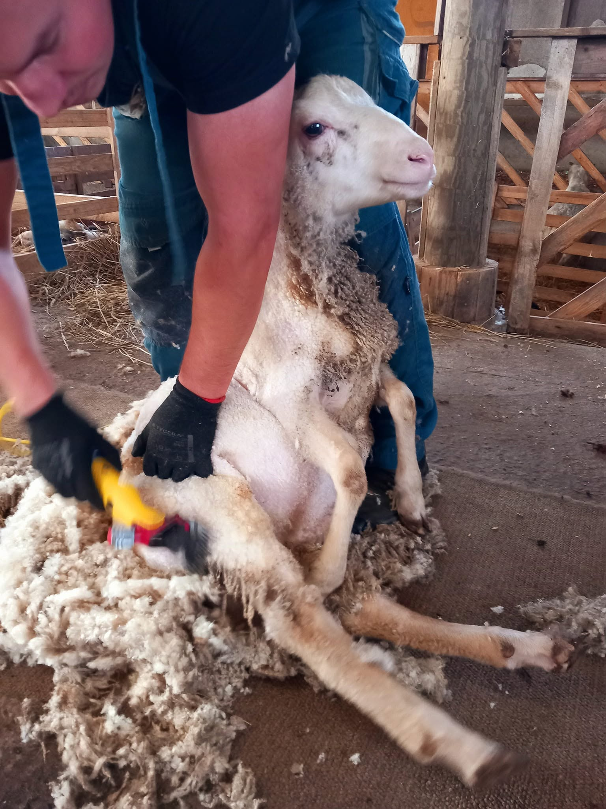
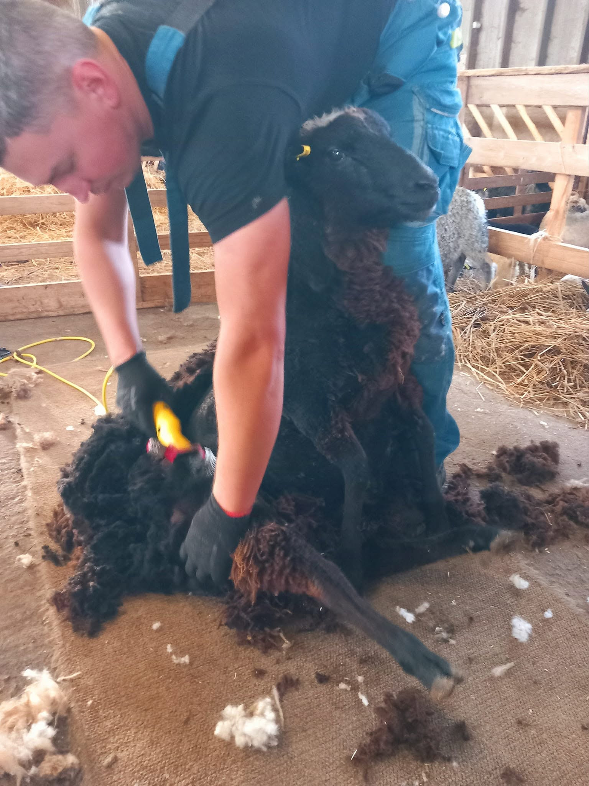
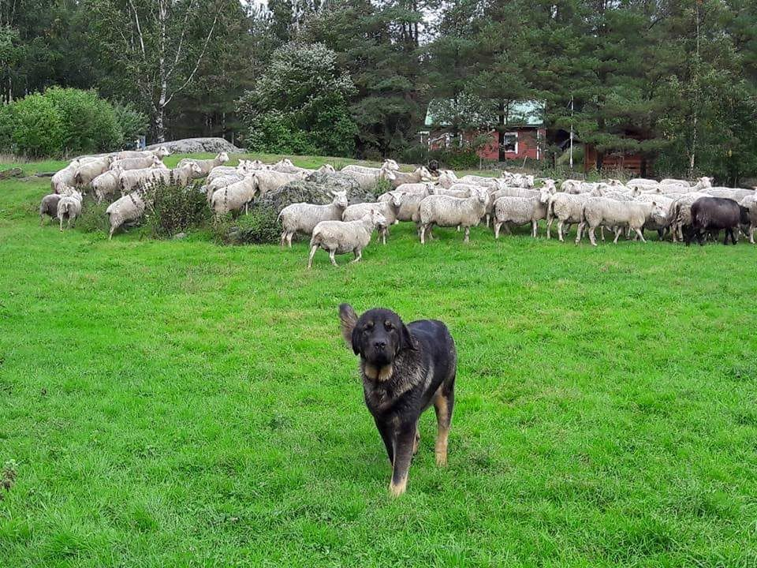
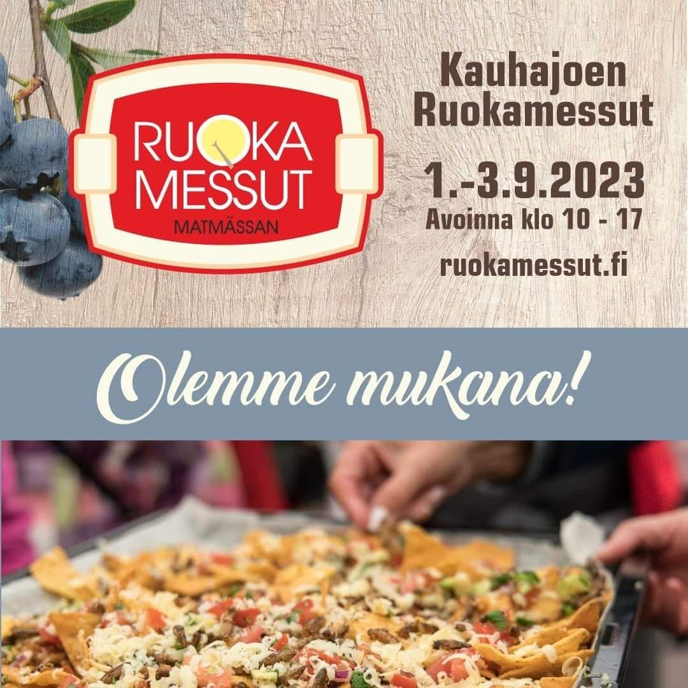

Puhtaita suomenlampaita Etelä-Pohjanmaalta. Karitsanliha, villalanka ja tali suoraan tilalta Sarvijoelta.
Rena finska lantras-får från Södra Österbotten. Lammkött, ullgarn och talg direkt från gården i Sarvijoki.
Pure Finnish landrace sheep from South Ostrobothnia. Lamb, wool yarn and tallow direct from the farm in Sarvijoki.

Kaitamäen lampolan karitsat syntyvät keväisin ja kasvavat vapaasti Sarvijoen pelloilla puhtaalla laitumella. Suomenlammas on kestävä alkuperäisrotu, jonka liha on maukasta, vähärasvaista ja laadukasta. Karitsanliha myydään suoraan tilalta pakasteena sesongin mukaan.
Kaitamäen gårds lamm föds på våren och växer fritt på Sarvijoki-fältens rena betesmark. Det finska lantraset är en uthållig ursprungsras vars kött är smakriskt, magert och högkvalitativt. Lammköttet säljs direkt från gården som fryst kött, i säsong.
Kaitamäen Lampola's lambs are born each spring and roam freely across the pastures of Sarvijoki. The Finnish landrace is a resilient heritage breed whose meat is flavourful, lean and of outstanding quality. Lamb is sold direct from the farm as frozen cuts, in season.
Kaitamäen lampolan pihapiirissä toimii Sarvijoen kehräämö, jossa suomenlampaiden villa jalostuu perinteisin menetelmin laadukkaaksi villalangaksi. Koko polku laitumelta lankaan tapahtuu samalla pihatilalla.
I gårdens område finns Sarvijoki spinneriet, där ullfrån de finska lantrasfåren förädlas med traditionella metoder till kvalitetsgarn. Hela resan från betesmark till garn sker på samma gård.
Within the farm's own grounds operates the Sarvijoki spinning mill, where wool from Finnish landrace sheep is processed by traditional methods into quality yarn. The entire journey from pasture to finished yarn takes place on the same farm.
320 uuhta laiduntaa luonnon ehdoilla Sarvijoen pelloilla. Vuosikymmenten kokemus tuottaa tervettä, hyvälaatuista villaa.
320 tackor betar naturligt på Sarvijoki-fältens marker. Decennier av erfarenhet ger hälsosam, högkvalitativ ull.
320 ewes graze naturally across Sarvijoki's fields. Decades of experience produce healthy, high-quality fleece.
Keväinen leikkuu suoritetaan huolellisesti. Raakavillasta erotellaan paras materiaali jatkojalostukseen kehräämöön.
Vårklippningen genomförs omsorgsfullt. Ur råullen väljs det bästa materialet ut för vidare bearbetning i spinneriet.
Spring shearing is carried out with care. The finest raw fleece is selected for further processing at the mill.
Sarvijoen kehräämössä villa pestään, karstataan ja kehrätään langaksi. Perinteinen ammattitaito takaa tasalaatuisen lopputuloksen.
I Sarvijoki spinneriet tvättas, kardas och spinns ullen till garn. Traditionellt hantverk garanterar ett jämnt och kvalitativt resultat.
At Sarvijoki Mill the wool is washed, carded and spun into yarn. Traditional craftsmanship ensures a consistent, quality result.
Valmis villalanka on täysin suomalaista alkuperää. Hienoa, luonnollista ja kestävää. Saatavilla suoraan tilalta.
Det färdiga ullgarnet är av helt finländskt ursprung. Fint, naturligt och hållbart. Tillgängligt direkt från gården.
The finished yarn is entirely Finnish in origin. Fine, natural and durable. Available direct from the farm.

Suomenlammas on tunnettu poikkeuksellisen laadukkaasta, hienosta ja joustavan pehmeästä villastaan. Kaitamäen lampolan villalanka on valmistettu kokonaan omilta lampailta, kehrätty pihapiirissä toimivassa Sarvijoen kehräämössä. Villalangan lisäksi saatavilla on puhdasta lampaantalia.
Det finska lantraset är känt för sin exceptionellt fina, elastiska och mjuka ull. Kaitamäen gårds ullgarn är tillverkat helt från egna får och spunnet i Sarvijoki spinneriet på gårdsplanen. Förutom ullgarn finns även rent fåretalg tillgängligt.
The Finnish landrace is renowned for its exceptionally fine, springy and soft wool. Kaitamäen Lampola's yarn is produced entirely from their own flock and spun in the Sarvijoki mill on the farm grounds. In addition to yarn, pure sheep tallow is also available.
"Puhtaita suomenlampaita jo vuodesta 1978."
"Rena finska lantras-får sedan 1978."
"Pure Finnish sheep since 1978."
Kaitamäen lampola on kasvattanut alkuperäisrotua, suomenlampaita, Kurikan Sarvijoella jo yli neljän vuosikymmenen ajan. Alkuperäisrotuun erikoistuminen on ollut tietoinen valinta, jota kantavat arvot ovat olleet laatu, perinne ja kestävyys.
Kaitamäen gård har födat upp ursprungsrasen finsk lantras i Kurikka Sarvijoki i över fyra decennier. Specialiseringen på ursprungsrasen har varit ett medvetet val, drivet av värden som kvalitet, tradition och hållbarhet.
Kaitamäen Lampola has raised the native Finnish landrace sheep in Kurikka's Sarvijoki for over four decades. Specialising in a heritage breed has been a deliberate choice, driven by a commitment to quality, tradition and sustainability.
Suomenlammas on Suomen kansallisrotu, joka sopii erinomaisesti pohjalaisiin luonnonolosuhteisiin. Lauma on kasvanut 320 uuheen, ja tilan yhteydessä toimiva Sarvijoen kehräämö on tuonut lampurin taidon entistä lähemmäs lopputuotetta.
Det finska lantraset är Finlands nationalras, som passar utmärkt för de österbottniska naturförhållandena. Flocken har vuxit till 320 tackor och det på gården belägna Sarvijoki spinneriet har fört lammherdekunnandet ännu närmare slutprodukten.
The Finnish landrace is Finland's national breed, superbly suited to the conditions of Ostrobothnia. The flock has grown to 320 ewes, and the on-farm Sarvijoki spinning mill has brought the shepherd's craft ever closer to the finished product.



